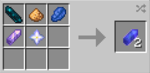
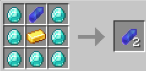
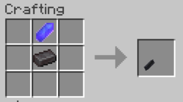
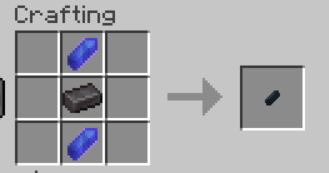
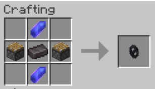
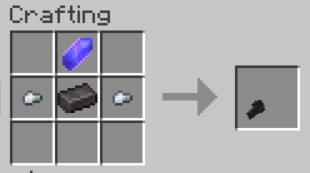
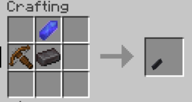
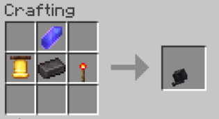

A magical crystal that when pressurised releases plasma. Has nothing to do with a kyber crystal, what are you even talking about?
Obtaining
Crafting is the only way to obtain this item as of 0.0.2
crafting
Inital Recipe
Duping
Both of the recipes result in 2 krystals
Usage
Krystal is just a crafting ingredient. It is only used to access other items from this mod.







History
| 0.0.2 | Introduced. |